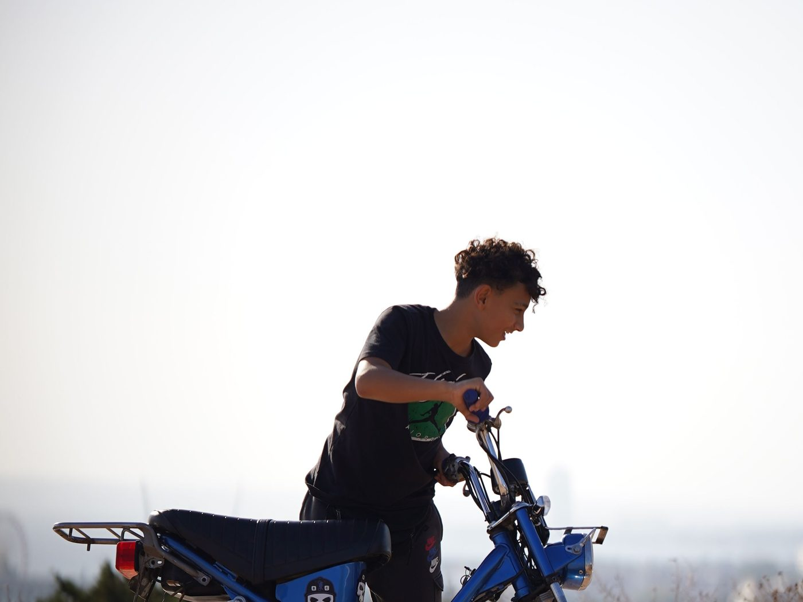
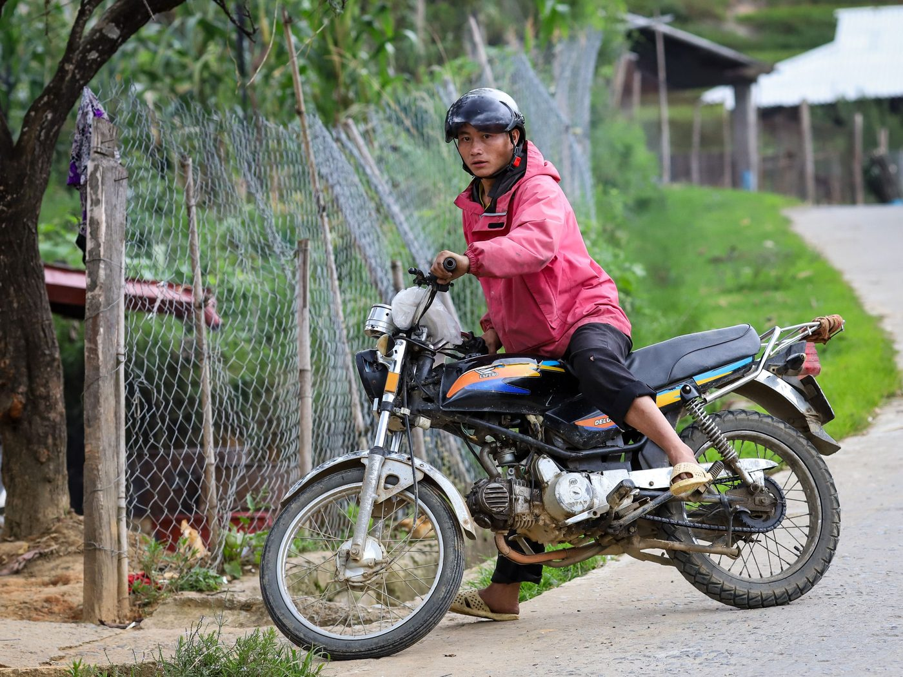

냐짱 50cc 오토바이, 누구에게 맞고 누구에게 안 맞을까
저희는 오토바이를 팔지만 모두에게 팔 이유는 없습니다. 50cc가 맞지 않는 사람은 고마움이 아니라 실망을 안고 돌아옵니다. 그래서 솔직한 필터를 드립니다. 먼저 누구에게 맞는지, 그다음 누구에게 안 맞는지.
50cc 오토바이가 맞는 사람
냐짱에서 겨울을 나거나 몇 달씩 사는 사람. 가장 대표적인 경우입니다. 한 시즌 동안 내 교통수단은 렌트보다 싸고, 매달 연장할지 고민할 필요도 없습니다. 계산은 겨울 시즌용 오토바이에 있습니다.
면허에 이륜차 종류가 없는 사람. 이것이 50cc의 핵심입니다: 베트남에서는 50cm³ 이하 차량에 이륜차 면허 종류가 필요하지 않습니다. 저희가 항상 덧붙이는 단서: 등록증의 50cm³ 이하는 필요조건이지만, 교통 규칙, 헬멧, 나이, 체류 조건은 여전히 지켜야 하며 요건은 구매 시점에 확인해야 합니다. 자세히 — 50cc 면허 규정.
시내와 근교를 다니는 사람. 냐짱 시내, 해변 도로, 시장, 해변, 20–40km 이동 — 바로 50cc가 편한 거리입니다.
이륜차 초보자. 낮은 출력이 여기서는 장점입니다: 실수를 용서하고 갑자기 튀어나가지 않습니다. 특히 스쿠터라면.
잘 달리는 저렴한 오토바이가 필요한 사람. 저희 50cc 오토바이는 서류가 갖춰져 있고, 판매 전에 오일을 교환하고 타이어와 브레이크를 점검합니다.

50cc 오토바이가 맞지 않는 사람
1~2주만 머무는 사람. 구매 비용을 뽑을 수 없고, 되팔 시간도 없습니다. 렌트하세요.
도시 간 이동을 계획하는 사람. 냐짱 — 달랏, 냐짱 — 호이안 같은 경로는 50cc에 좋은 선택이 아닙니다: 특히 산길과 긴 오르막에서 속도와 출력 여유가 부족합니다. 별도 가이드 — 50cc로 오르막 타는 법.
매일 성인 두 명과 짐을 싣는 사람. 50cc로 둘이 타기는 하지만 오르막과 가속에서 바로 느껴집니다. 자세히 — 50cc로 둘이 탈 수 있을까.
속도를 원하는 사람. 50cc는 시내 이동용이지 성능용이 아닙니다. 고속도로에서 차량 흐름을 추월하고 싶다면 등급을 잘못 고른 것입니다.
관리를 전혀 할 생각이 없는 사람. 오일, 타이어, 브레이크, 전구 — 최소한의 관리는 필요합니다. 저희는 판매 후 지원을 하지 않습니다: 판매 후 오토바이는 고객의 것입니다.
베트남 교통에서 자신이 없는 사람. 솔직한 중단 사유이며, 바로 인정하는 게 낫습니다. 베트남 주행 기본부터 시작하고 그다음 결정하세요.

스스로 확인할 세 가지 질문
- 여기 몇 달 있을 건가? 두 달 미만 — 렌트. 두 달 이상 — 구매가 더 이득.
- 어디를 달릴 건가? 시내와 근교 — 50cc 적합. 도시 간 고속도로와 산 — 부적합.
- 출국 전에 직접 되팔 수 있나? 그렇다면 — 구매가 맞습니다. 아니라면 — 돈의 일부를 돌려받지 못하는 것으로 보유 비용을 계산하세요.
세 가지 답이 모두 구매 쪽이라면 선택은 간단합니다: 스쿠터냐 반자동이냐, 그리고 재고 중 어느 오토바이가 본인에게 편한지.
고민된다면 직접 보러 오세요
담당자와 약속 후 방문, 냐짱 남부, 매일 9:00–21:00. 와서 앉아 보고, 몇 분 타 보고, 그 자리에서 결정하면 됩니다. 맞지 않으면 괜찮습니다, 저희는 누구에게도 강요하지 않습니다: 빨리 결정한다고 할인도 없고, 서두르게 할 이유도 없습니다.
요약
50cc 오토바이는 냐짱에 몇 달씩 살면서 이륜차 면허 없이 합법적으로 타고 싶은 사람을 위한 도시 교통수단입니다. 짧은 체류, 장거리 고속도로, 짐을 싣고 늘 둘이 타는 경우에는 좋은 선택이 아니며, 저희는 이를 미리 말씀드립니다. 지금 재고는 카탈로그에, 저희가 오토바이를 찾고 가져오는 방식은 진행 방식에 있습니다.